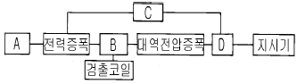
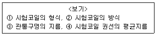

와전류비파괴검사기사(구) (2003-05-25 기출문제)
1과목: 와전류탐상시험원리
1. 검사부품의 특성변화로 인한 와전류검사 코일의 임피던스 변화는 다음 변수 중에서 어떤 조합일 때 가장 쉽게 분석할 수 있는가?
- 용량리액턴스와 저항
- 조화주파수와 유도 리액턴스
- 신호폭과 위상
- 잔류자기와 조화주파수
(정답률: 알수없음)

2. 전기전도도의 감소는 다음의 무엇과 동등한가?
- 투자율의 증가
- 비저항의 증가
- 투자율의 감소
- 비저항의 감소
(정답률: 알수없음)
3. 비교표준(reference standard)을 하기 위한 시편을 선별할 때의 중요 조건이 아닌 것은?
- 표준시편은 검사할 시편과 동일한 크기와 동일한 모양이어야 한다.
- 표준시편은 검사할 시편과 동일한 열처리가 된 것이어야 한다.
- 표준시편은 검사한 시편과 동일한 표면 조건이어야 한다.
- 시편이 알루미늄일 때는 표면은 양극화(anodized) 되어져야 한다.
(정답률: 알수없음)
4. IACS(International Annealed Copper Standard)는 어떤 용도로 사용하는가?
- 전기전도도의 상대적 비교
- 와전류 침투깊이 계산
- 결함신호 평가
- 결함 깊이 측정
(정답률: 알수없음)
5. 다음 비파괴검사방법중 수신부를 자동화할 수 없는 것은?
- 초음파탐상시험
- 자분탐상시험
- 와전류탐상시험
- 음향방출시험
(정답률: 알수없음)
6. 직류는 와전류를 발생하지 않는다. 올바른 이유는?
- 직류는 시험체 속에 와전류를 유도하지 않기 때문
- 직류는 장기간 안정성을 가지고 생성될 수 없기 때문
- 요구되는 전류치가 실행할 수 없게 높기 때문
- 직류회로는 더욱 간단하고 신뢰성이 없기 때문
(정답률: 알수없음)
7. 와전류탐상시험시 시험코일에 흐르는 전류의 성질에 관한 설명중 틀리는 것은?
- 코일 주위에 발생하는 자장의 영향을 받는다.
- 시험코일의 전류는 자장을 만든다.
- 시험코일의 전류는 오직 코일 자체의 전도도에만 관계된다.
- 시험코일의 전류는 코일의 저항이 작을수록 많이 흐르게 된다.
(정답률: 알수없음)
8. 어떤 금속의 전기전도도를 측정할 때, 측정값에 큰 영향을 주는 인자는?
- 코일의 직경
- 재료의 온도
- 재료의 두께
- 코일의 특성
(정답률: 알수없음)
9. 와전류탐상 시험장치에 대한 검교정이 불필요한 경우는?
- 제조공정의 시작 시점
- 제조공정의 종료 시점
- 제조공정의 개별 품목마다
- 장비의 기능에 이상 발생시
(정답률: 알수없음)
10. 시험체에 결함이 존재하면 와전류의 흐름이 변하는데 직접적인 이유는?
- 충진율의 변화
- 전도도의 변화
- 끝부분 효과의 변화
- 리프트 오프의 변화
(정답률: 알수없음)
11. 와전류탐상시험 coil의 자기 감응계수(L)를 증가시키려면 어떻게 하는것이 좋은가?
- 코일의 단면적을 줄인다.
- 코일의 길이를 늘린다.
- 코일의 감은수(turn)를 줄인다.
- 코일의 감은수를 늘린다.
(정답률: 알수없음)
12. 어느 재료에서 주파수가 10kHz일 때 와전류 침투깊이가 3㎜였다. 주파수가 5kHz일 때 침투깊이는 어느 정도가 되는가?
- 1.8㎜
- 3.0㎜
- 4.2㎜
- 5.4㎜
(정답률: 알수없음)
13. 전자기파가 균일(homegeneous)하고 선형적(Linear)이며 등방성(isotropic)있는 금속 내부를 전파해 간다고 가정하자. 다음 중 전파가 x축 방향으로 진행한다면 공간좌표상에서 전기장 및 자기장의 방향은?
- 전기장 : X축 방향, 자기장 : Y축 방향
- 전기장 : Y축 방향, 자기장 : Z축 방향
- 전기장 : Z축 방향, 자기장 : X축 방향
- 전기장 : X축 방향, 자기장 : Z축방향
(정답률: 알수없음)
14. 와전류탐상시험시 검사체에 함유되어 있는 불순물(inclusion)은?
- 와전류의 세기를 증가시킨다.
- 와전류의 세기와 흐름을 변화시킨다.
- 와전류는 불순물과 무관하고 단지 시료의 전도도에만 관계된다.
- 와전류의 세기에는 변화가 없고 와전류의 방향만을 변화시킨다.
(정답률: 알수없음)
15. 와전류탐상시험에 영향을 주는 세가지 주요 요소는?
- 전기적 전도도, 주파수, 시험체의 기하학적 모양
- 밀도, 투자율, 주파수
- 전기적 전도도, 투자율, 시험체의 기하학적 모양
- 열적 전도도, 전기적 전도도, 투자율
(정답률: 알수없음)
16. 다음 중 와전류탐상 시험코일의 임피던스는 언제 증가하는가?
- 주파수를 증가시킬 때
- 코일의 리액턴스를 감소시킬 때
- 코일의 레지스턴스를 감소시킬 때
- 코일의 유도 리액턴스를 감소시키므로
(정답률: 알수없음)
17. 와전류의 침투깊이를 2배로 증가시키려면 주파수를 몇 배로 해야 하는가?
- 4배
- 2배
- 0.5배
- 0.25배
(정답률: 알수없음)
18. 비파괴검사 중 육안검사의 일반적인 장점이 아닌 것은?
- 타검사법에 비하여 검사가 간단하다.
- 타검사법에 비하여 검사속도가 빠르다.
- 타검사법에 비하여 표면결함만 검출 가능하다.
- 타검사법에 비하여 비용이 저렴하다.
(정답률: 알수없음)
19. 와전류탐상에서 시험 주파수를 선정시 고려하여야할 사항은?
- 시험 코일의 길이
- 충진율
- 외부 잡음
- 결함과 잡음의 위상차
(정답률: 알수없음)
20. 구리의 비저항은 1.7x10-7Ω.㎝이고 아연의 비저항은 5.9x10-7Ω.㎝이다. 아연의 전도도는 몇 % IACS 인가?
- 29%
- 35%
- 59%
- 17%
(정답률: 알수없음)
2과목: 와전류탐상검사
21. 검사 코일의 임피던스(Impedance)는 다음의 어떤 성분과 깊은 관련이 있는가?
- 저항과 캐피시턴스(Resistance and Capacitance)
- 인덕턴스와 주파수(Inductance and Frequency)
- 저항과 유도 리액턴스(Resistance and Inductive Reactance)
- 저항과 인덕턴스(Resistance and Inductance)
(정답률: 알수없음)
22. 검사 주파수의 척도로 사용되는 정규화 주파수에 영향을 주는 인자는?
- 코일의 길이
- 도체와의 결합 상태
- 전도율
- 시험물의 크기
(정답률: 알수없음)
23. 비철금속을 와전류탐상검사할 경우 시험주파수를 선택하는 기준이 아닌 것은?
- 위상판별 기능 여부
- 와전류 침투깊이
- 응답 시간
- 위상기의 크기
(정답률: 알수없음)
24. 와전류탐상시험에 대한 설명 중 틀린 내용은?
- 검사해 얻은 지시에서 직접 결함의 종류, 형상의 판별이 곤란하다.
- 표면아래 깊은 곳에 있는 결함 검출이 곤란하다.
- 신호평가에 대한 많은 경험이 요구된다.
- 고속 자동화 시험이 곤란하다.
(정답률: 알수없음)
25. 주파수가 일정할 경우 다음 중 침투 깊이가 가장 큰 재료는?
- 알루미늄(IACS 전도도 35%)
- 황동(IACS 전도도 15%)
- 구리(IACS 전도도 95%)
- 납(IACS 전도도 7%)
(정답률: 알수없음)
26. 와전류탐상검사에서 발생하는 잡음과 그것을 제거하는 방법으로 적절한 것은?
- 시험체와 코일의 상대위치의 변화에 의해 발생하는 잡음은 필터를 이용한다.
- 시험체의 재질의 변화에 의해 발생하는 잡음은 동기검파를 이용한다.
- 시험체의 자기적 불균일로 인해 발생하는 잡음은 접지를 이용한다.
- 각종기기의 진동에 의한 잡음은 자기포화를 이용한다.
(정답률: 알수없음)
27. 내삽형코일(inside coil)에 대한 설명으로 적당하지 않은 것은?
- inner probe 또는 bobbin coil 이라고도 한다.
- 관 내부 검사에 용이하다.
- Probe 마모와 충진율의 문제가 있다.
- 시험속도가 표면형 코일에 비하여 느리다.
(정답률: 알수없음)
28. 와전류탐상검사에서는 시험장치의 어떤 변화를 이용하여 결함을 검출하는가?
- 투자율
- 도전율
- 충진율
- 임피던스
(정답률: 알수없음)
29. 가장 많이 사용되는 와류탐상시험법으로, 신호에 의해 나타나는 위상각의 변화를 측정하는 검사 방법은?
- 임피던스법
- 변조분석법
- 위상 변형법
- 위상 분석법
(정답률: 알수없음)
30. 시간축 선형(Linear time base method) 장비를 이용한 탐상시험에 대하여 바르게 설명한 것은?
- 타원법과는 달리 절대코일을 사용한다.
- 평형조절은 음극선관 신호의 위상에는 영향이 없다.
- 평형 조절은 음극선관에 나타나는 신호의 수평부가 변한다.
- 파형은 평형과 위상 조정에 의해 모양과 위치를 조절할 수 있다.
(정답률: 알수없음)
31. 관통코일을 사용한 타원법으로 알 수 있는 것은?
- 환봉의 표면과 내부 균열을 검사할 수 있다.
- 표면 균열이 있는 환봉의 직경 측정을 할 수 없다.
- 비철 환봉의 합금질의 값에 제한된다.
- Lift-off 변화에 영향이 없다.
(정답률: 알수없음)
32. 그림에서 Bridge회로가 들어가야 할 곳은?

- A
- B
- C
- D
(정답률: 알수없음)
33. 와류탐상시험으로 봉(rod)을 시험할 때 최대 감도를 얻을 수 있을 때는? (단, fill-factor < 1 이다.)
- fill-factor가 가능한 한 낮을 때
- fill-factor가 0.5 일 때
- fill-factor가 가능한 한 높을 때
- 코일이 가능한 한 크게 만들어 졌을 때
(정답률: 알수없음)
34. 증폭기와 이상기의 출력을 비교해서 결함신호를 검출하기 위한 회로는?
- 브리지(bridge) 회로
- 동기 검파기
- 밸런스 미터(balance meter)
- 선별기(filter)
(정답률: 알수없음)
35. 튜브 내경(Di)이 16.0mm, 두께(t)가 2mm, 비저항(ρ)이 100μΩ-cm 인 재료를 시험 시에 내면 결함과 외면 결함에 의한 신호의 위상 차가 90° , t/δ = 1.1이 되기 위한 시험 주파수를 계산하면?
- 75kHz
- 82kHz
- 826kHz
- 1100kHz
(정답률: 알수없음)
36. 결함 검출이 가장 쉬운 와전류와 결함과의 방향은?
- 결함과 동일 평면상에 있을 때
- 결함 방향과 수직일 때
- 결함과 평행일 때
- 결함방향과 유도와전류가 90o를 벗어났을 때
(정답률: 알수없음)
37. 와전류탐상 시험장치에서 필터를 통과한 신호의 낮은 레벨의 잡음을 제거하는 것은?
- 이상기
- 선별기(Filter)
- 브릿지(Bridge) 회로
- 리젝션(Rejection)
(정답률: 알수없음)
38. 어떤 재료의 전기 전도도를 측정할 경우 다음 중 측정된 전기 전도도에 가장 큰 영향을 미치는 것은?
- 시험체의 두께
- 코일의 반지름
- 시편의 온도
- 시험 주파수
(정답률: 알수없음)
39. 와전류탐상시험에서 다음 중 표준비교형에 비하여 자기비 교형의 장점이 아닌 것은?
- 잡음신호의 진폭이 감소한다.
- 시험체의 온도변화에 의한 영향이 적다.
- 짧은 결함의 검출이 용이하다.
- 검사속도가 빠르다.
(정답률: 알수없음)
40. 솔레노이드에서 단위 길이당 감은 수(권선수, n)를 2배로 하게 되면 인덕턴스는 대략 어떻게 변하는가?
- 변화 없다.
- 2 배로 커진다.
- 4 배로 커진다.
- 1/2 로 작아진다.
(정답률: 알수없음)
3과목: 와전류탐상관련규격
41. 인터넷의 개념과 관련이 없는 것은?
- 수많은 사람이나 기관과 연결할 수 있는 개방구조이다.
- 독자적인 주소를 할당받는다.
- 전세계 통신망들이 합쳐진 네트워크의 네트워크이다.
- 단일 운영체제로 연결된 네트워크 통신망이다.
(정답률: 알수없음)
42. 윈도우 운영체제에서 디스크의 단편화를 제거하기 위한 목적의 프로그램은?
- 디스크 검사
- 디스크 정리
- 디스크 조각모음
- 디스크 공간 늘림
(정답률: 알수없음)
43. KS D 0074에 따른 이음매 없는 티타늄관의 와류탐상에서 선택할 수 있는 최대 시험 주파수는?
- 256 kHz
- 512 kHz
- 1024 kHz
- 2048 kHz
(정답률: 알수없음)
44. KS D 0251 강관의 와류탐상검사에서 대비시험편 인공 흠가공방법을 잘못 설명한 것은?
- 각흠은 기계가공 또는 방전가공한다.
- 각흠은 관의 바깥면에 관의 축방향으로 가공한다.
- 줄흠은 3각형 줄로 관의 축방향으로 가공한다.
- 드릴 구멍은 관 표면에 대하여 수직으로 뚫는다.
(정답률: 알수없음)
45. ASTM E 426에 따라 스테인리스강관을 와류탐상할 때 검사장비에 권고되는 최대 재교정 주기는?
- 4시간
- 8시간
- 12시간
- 24시간
(정답률: 알수없음)
46. 전자우편을 이용할 때 사용자의 컴퓨터에서 다른 시스템에 도착한 전자우편을 볼 수 있도록 하는 프로토콜은?
- POP3
- SMTP
- NMTP
- HTTP
(정답률: 알수없음)
47. KS D 0251에서 대비 시험편의 인공 흠에서의 신호와 동등 이상의 신호를 검출한 관인 경우 불합격 처리한다. 단, 육안검사 및 신호의 발생상황에 따라서 합격처리를 하는 경우가 있는데 이에 해당되지 않는 경우는?
- 교정 표식
- 비이드 절삭금
- 부식 균열
- 긁힌 홈
(정답률: 알수없음)
48. 강관을 KS 규격에 따라 연속적으로 와류탐상할 경우 최소한의 감도확인 주기는?
- 4시간
- 6시간
- 8시간
- 10시간
(정답률: 알수없음)
49. ASME Sec.V에 따른 비자성 열교환기 튜브의 와전류탐상검사 중 신호수집 시스템이 갖추어야 할 요건에 대한 설명으로 부적절한 것은?
- 다중주파수를 동시에 적용하며 결함의 검출능이 탁월하도록 검사주파수를 선정한다.
- 튜브의 투자율 및 재질 등의 변화에 대한 감도는 요구되지 않는다.
- 검사데이터는 위상 및 진폭의 출력이 가능하여야 한다.
- 결함의 종류, 크기 및 특성에 따라 다양한 종류의 탐촉자를 적용할 수 있다.
(정답률: 알수없음)
50. ASTM 규격 중 이음매 없는 동 및 동합금 튜브의 와전류탐상 수행과 관련된 표준은 어디에 규정한 것인가?
- SE-125
- SE-243
- SE-309
- SE-426
(정답률: 알수없음)
51. 인터넷 상에서 사용자가 원하는 키워드를 입력하여 사이트를 찾고자 할 때 사용할 프로그램은?
- 즐겨찾기
- 검색엔진
- 목록보기
- 인터넷옵션
(정답률: 알수없음)
52. 국내 전력산업기술기준(KEPIC)은 ASME 규격을 국산화한 규정이다. ASME Sec.XI에 해당하는 전력산업기술기준은 다음 중 어느 분야의 규정인가?
- 원자력기계
- 일반기계
- 시험 및 재료
- 원자력발전소 가동중 검사
(정답률: 알수없음)
53. ASTM E 215에서 규정한 Primary Reference Standard의 기준결함을 결정하는 인자는?
- 검사할 튜브의 조성
- 검사할 튜브의 사용목적
- 검사할 튜브의 종류
- 검사할 튜브의 크기
(정답률: 알수없음)
54. ASTM E 426에 따라 오스테나이트계 크롬-니켈 스테인리스강을 와류탐상할 때, 일반적으로 사용하는 주파수는?
- 1∼50kHz
- 1∼125kHz
- 1∼250kHz
- 1∼300kHz
(정답률: 알수없음)
55. ASTM E 215는 이음매없는 알루미늄합금관의 와전류탐상시험에 대해 규정하고 있다. 연속시험시 시험장치를 교정할 때 최소한의 교정 주기는?
- 1시간
- 2시간
- 3시간
- 4시간
(정답률: 알수없음)
56. KS D 0232에서 규정하고 있는 인공 흠의 가공, 종류 및 치수에 관한 설명이다. 틀린 것은?
- 인공 흠의 가공은 방전가공 또는 기계가공으로 제한한다.
- 대비시험편의 흠은 원칙적으로 인공 흠으로 한다.
- 인공 흠의 종류는 각진 흠 또는 드릴구멍으로 한다.
- 원형 봉강의 대비 시험편의 인공 흠은 각진 흠으로 하고 깊이의 허용차는 ±0.⑤㎜로 한다.
(정답률: 알수없음)
57. ASTM E 309에서 규정한 와전류는 튜브재의 외부표면으로 부터 거리가 멀어질 때 그 밀도가 어떻게 변하는가?
- 변화하지 않는다.
- 거리에 따라 거의 반비례로 감소한다.
- 거리에 따라 거의 지수함수로 감소한다.
- 거리에 따라 거의 비례로 증가한다.
(정답률: 알수없음)
58. KS D 0232(강의 와류탐상 시험방법)에 따른 시험코일의 표시를 보기와 같은 내용에 대해 기록할 때 시험코일 권선의 평균지름에 대한 표시는 몇 번째 순서에 기록 표시 되는가?

- 1
- 2
- 3
- 4
(정답률: 알수없음)
59. KS D 0232에 따른 원형봉강의 와류탐상시험에서 시험조건의 설정은 시험장치에 통전후 어느 시기에 하는가?
- 통전 직후
- 통전후 시험개시 직전
- 통전시켜 5분이상 경과한 후 즉시
- 통전시켜 5분이상 경과한 후 시험개시 직전
(정답률: 알수없음)
60. 다음의 서버에 대한 설명이 잘못된 것은?
- SMTP 서버 : 메일러로부터 전자우편을 받아서 상대방의 SMTP 서버로 보낸다.
- FTP 서버 : 파일의 송수신을 지원한다.
- Proxy 서버 : 특정 조식의 랜과 외부 네트워크 사이에서 방화벽 역할을 수행하며, 동시에 여러 외부 서버의 데이터를 대신 받아주는 역할을 한다.
- Gopher 서버 : 원격 시스템 접속을 지원한다.
(정답률: 알수없음)
4과목: 금속재료학
61. 석출경화형 스테인리스강인 것은?
- SS 형
- RS 형
- EF 형
- PH 형
(정답률: 알수없음)
62. 와이(Y)합금을 올바르게 설명한 것은?
- Aℓ -Zn 합금에 소량의 Mg 과 Mn을 첨가한 내열성합금
- Aℓ -Cu 합금에 소량의 Mg 과 Ni를 첨가한 내열성합금
- Aℓ -Si 합금에 소량의 Mg 과 Pb을 첨가한 내열성합금
- Aℓ -Fe 합금에 소량의 Mg 과 Sn을 첨가한 내열성합금
(정답률: 알수없음)
63. 아연의 성질을 올바르게 설명한 것은?
- 주조상태에서는 조대결정이 되므로 연신이 낮고 취약하여 상온가공이 어렵다.
- 체심입방격자이며 고온에서 증기압이 낮다.
- 건조한 공기중에서는 산화가 잘되며 산, 알칼리에 강하다.
- Fe가 0.008% 이상이 되면 연질의 FeZn7상이 나타나 인성과 인장강도를 증가시킨다.
(정답률: 알수없음)
64. 마우러 조직도(maurer diagram)란?
- 주철에서 C 와 Si 양에 따른 주철의 조직 관계
- 주철에서 C 와 P 양에 따른 주철의 조직 관계
- 주철에서 C 와 Mn 양에 따른 주철의 조직 관계
- 주철에서 C 와 S 양에 따른 주철의 조직 관계
(정답률: 알수없음)
65. Fe3C의 금속간 화합물에 있어서의 탄소의 원자비는?
- 25%
- 40%
- 60%
- 85%
(정답률: 알수없음)
66. 피검면의 상황을 셀루로이드피막에 옮겨서 이것을 현미경으로 검사하는 방법은?
- EDT 법
- IMPULES 법
- UT - NDT 법
- SUMP 법
(정답률: 알수없음)
67. 주물용 Aℓ 청동에 대한 설명 중 틀린 것은?
- 고력황동을 사용해서 만든 프로펠러 보다 중량을 10∼20% 가볍게 할 수 있다.
- 내해수성이 좋아 대형 프로펠러를 만들수 있다.
- 경도, 내마모성이 나쁘다.
- 화학 공업장치 분야에 사용된다.
(정답률: 알수없음)
68. 스프링강으로 가장 적당한 조직은?
- 페라이트
- 오스테나이트
- 솔바이트
- 시멘타이트
(정답률: 알수없음)
69. 델타 메탈(delta metal)의 설명이 틀린 것은?
- 주물이나 단조재로 사용되며 고온가공성이 양호하다.
- 6:4 황동에 1% 내외의 Fe 가 포함된 것이다.
- Cu 54∼58%, Sn 40∼43%, Mg 1% 이내의 합금이다.
- 내식성이 우수하므로 선박, 광산, 수력기계, 화학기계 볼트 너트 등에 사용된다.
(정답률: 알수없음)
70. 활자(Type metal)합금은?
- Cu-Sb-Zr
- Fe-Zn-Sb
- Pb-Sb-Sn
- Al-Se-Zn
(정답률: 알수없음)
71. 서브 제로(sub-zero)에 대한 설명 중 맞지 않는 것은?
- 0℃이하의 온도에서 냉각시키는 조작이다.
- 마텐자이트변태를 중지시키기 위한 것이다.
- 마텐자이트변태를 진행시키기 위한 것이다.
- 심냉처리라고도 한다.
(정답률: 알수없음)
72. Silumin의 개량 처리법에 있어서 미량의 Na 첨가에 대한 설명 중 가장 옳은 것은?
- 과냉현상과 결정성장의 저지에 의한다.
- 융체화 처리에 따른 공공(vacancy)의 형성에 의한다.
- 풀림에 따른 응고핵발생수의 증가에 의한다.
- 풀림 처리에 따른 결정립성장에 의한다.
(정답률: 알수없음)
73. 고력황동의 조직으로 맞는 것은?
- δ + α
- α + σ
- α + β
- β + γ
(정답률: 알수없음)
74. 자석강이 아닌 것은?
- NKS강
- Koster강
- MK강
- Vanity강
(정답률: 알수없음)
75. 탄소강에서 상온취성(cold shortness)의 원인이 되는 원소는?
- 황(S)
- 인(P)
- 규소(Si)
- 망간(Mn)
(정답률: 알수없음)
76. 귀금속에 속하지 않는 것은?
- 철
- 금
- 은
- 백금
(정답률: 알수없음)
77. 세라다이징(sherardizing)은 어느 금속을 철강제품의 표면에 확산 피복시킨 것인가?
- Cr
- Aℓ
- Si
- Zn
(정답률: 알수없음)
78. Ti 제련시 사염화티타늄(TiCl4)을 환원하여 스폰지(sponge)티탄을 얻는데 사용하는 환원제는?
- Aℓ
- Mg
- Cu
- Si
(정답률: 알수없음)
79. 열전대로 사용되는 Alumel 이란 어느 계통의 합금인가?
- Ni-Aℓ -Fe 합금
- Aℓ -Cr-Co 합금
- Ni-Mg -Cu 합금
- Aℓ -Mn-Pb 합금
(정답률: 알수없음)
80. 열처리 목적에 적합하지 않는 것은?
- 조직을 연화시키거나 기계가공에 적합한상태로 한다.
- 조직을 조대화시키고 방향성을 크게하며 편석을 많게 한다.
- 냉간가공 후 나쁜 영향을 제거한다.
- 조직을 안정화시키고 내식성을 개선시킨다.
(정답률: 알수없음)
5과목: 용접일반
81. 용접봉 용제(Flux)의 종류에 따라서 용접금속의 충격치가 다르다. 다음중 그 값이 가장 우수하게 나오는 계(系)는 어느 것인가?
- 일미나이트계(ilmenite계)
- 산화철계(酸化鐵系)
- 티타니아계(titania계)
- 저수소계(低水素系)
(정답률: 알수없음)
82. 용접기의 1차 입력이 20kVA 이고 전원 전압이 200V일 때, 용접기 1차측 안전 스위치로 가장 적합한 것은?
- 100A
- 10A
- 5A
- 0.1A
(정답률: 알수없음)
83. 용접부를 피닝하는 주목적으로 가장 적합한 것은?
- 모재의 재질을 검사한다.
- 미세한 먼지 등을 털어 낸다.
- 응력을 강하게 하고 변형을 크게 한다.
- 용접부의 잔류응력을 완화하고 변형을 방지한다.
(정답률: 알수없음)
84. 용접 제품에서 잔류응력의 영향이 아닌 것은?
- 취성파괴의 원인이 된다.
- 응력부식의 원인이 된다.
- 박판 구조물에서는 국부 좌굴을 촉진한다.
- 사용 중에는 변형의 원인은 되지 않는다.
(정답률: 알수없음)
85. 다음의 용접법 중에서 전기적인 아크(Arc)에너지를 이용하는 것은?
- 테르밋 용접
- 플라즈마 용접
- 일렉트로슬래그 용접
- 프로젝션 용접
(정답률: 알수없음)
86. 가스용접에서 좌(전)진법에 대한 설명으로 틀린 것은?
- 용접속도는 우진법에 비하여 느리다.
- 소요 홈각도는 우진법에 비하여 작다.
- 용접 변형은 우진법에 비하여 크다.
- 열 이용률은 우진법에 비하여 나쁘다.
(정답률: 알수없음)
87. 아크용접 작업에서 아크시간이 7분, 휴식시간이 3분이라 할 때 실제 사용률(duty cycle)은 몇 % 가 되는가?
- 30
- 43
- 70
- 93
(정답률: 알수없음)
88. 일반적인 불활성가스 아크용접에 속하지 않는 것은?
- TIG 아크용접
- 알곤 아크용접
- 캐스케이드 아크용접
- MIG 아크용접
(정답률: 알수없음)
89. 서브머지드 아크용접시 아크의 길이가 길어지면 어떤 현상이 일어나는가?
- 용입이 얕고 폭이 넓어진다.
- 오버랩이 발생한다.
- 용입이 깊어진다.
- 용접비드가 좁아진다.
(정답률: 알수없음)
90. 피복 금속 아크용접봉의 용융속도에 관한 설명 중 잘못된 것은?
- 아크 전류에 비례한다.
- 아크 전압에 비례한다.
- 같은 전류의 경우 봉의 크기와 무관하다.
- 심선이 같더라도 피복제에 따라 다르다.
(정답률: 알수없음)
91. 다음 중 아크 특성에 관한 설명 중 틀린 것은?
- 음극구역 전압강하는 양극구역 전압강하보다 많이 일어난다.
- 아크의 특성은 용접봉의 조성, 보호가스 등에 관계 없이 일정하다.
- 양극과 음극사이의 아크 간격이 길어지면 전압강하는 증가한다.
- 양극구역 전압강하는 아크 길이 및 전류에 관계없이 거의 일정하다.
(정답률: 알수없음)
92. 저수소계, 일미나이트계, 티탄계, 고산화철계 용접봉의 용접성에 대한 설명으로 틀린 것은?
- 내균열성은 피복제의 염기도가 높을수록 양호하다.
- 작업성은 피복제의 염기도가 높을수록 향상된다.
- 내균열성은 저수소계가 가장 좋다.
- 티탄계는 내균열성은 가장 나쁘다.
(정답률: 알수없음)
93. 탄산가스 용접시 와이어 돌출길이가 적당해야 용접이 잘된다. 용접전류 200[A] 미만일 때 다음 중 몇 mm 정도면 적당한가?
- 5 ∼ 7
- 10 ∼ 15
- 20 ∼ 25
- 25 ∼ 30
(정답률: 알수없음)
94. 플라스마 제트 용접의 특징 중 틀린 것은?
- 열에너지의 집중이 좋다.
- 용접속도가 빠르다.
- 맞대기 용접에서 모재 두께의 제한을 받지 않는다.
- 각종 재료의 용접이 가능하다.
(정답률: 알수없음)
95. 다음 설명 중 저수소계 용접봉의 특징이 아닌 것은?
- 탄산칼슘(CaCO3), 불화칼슘(CaF2)이 주성분이다.
- 아크에 탄산가스 분위기를 주어 용착금속에 용해되는 수소량을 적게 한다.
- 용착 금속은 기계적성질, 내균열성이 우수하다.
- 아크가 안정되어 작업성이 우수하다.
(정답률: 알수없음)
96. 아세틸렌 가스에 대한 설명 중 틀린 것은?
- 공기보다 가볍다.
- 순수한 아세틸렌 가스는 무색 기체이다.
- 불순물인 황화수소 등을 포함하고 있어 악취가 난다.
- 물에는 25배정도 용해되어서 용해 아세틸렌으로 만들어 용접에 이용되고 있다.
(정답률: 알수없음)
97. 현장에서 많이 사용하고 있는 일반적인 용해 아세틸렌에 대한 설명 중 틀린 것은?
- 발생기 아세틸렌에 비하여 불안정하다.
- 일정온도 이상이 되면 산소가 없어도 폭발한다.
- 아세틸렌가스를 아세톤에 용해시킨것이다.
- 발생기 아세틸렌보다 고순도이다.
(정답률: 알수없음)
98. 아크전류가 300A 아크전압이 25V 용접속도가 20cm/min인 경우 용접길이 1cm당 발생되는 용접입열은 몇 J/cm인가?
- 20000
- 22500
- 25500
- 30000
(정답률: 알수없음)
99. 강 용접물의 용접 변형에 영향을 주는 것이 아닌 것은?
- 용접입열
- 강의 상변태
- 용착량
- 용접결함
(정답률: 알수없음)
100. 산소-아세틸렌 가스 절단시 절단조건으로 설명이 잘못된 것은?
- 모재 중 불연소물이 적을 것
- 슬랙의 유동성이 좋고 쉽게 이탈할 것
- 모재의 연소온도가 용융온도보다 높을 것
- 슬랙의 용융온도가 모재의 용융온도보다 낮을 것
(정답률: 알수없음)